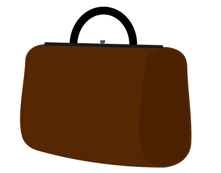

Hjem
Assetliste
Dokumentation
Spil
Assetliste
Spilelementer
Elementer der giver point
Elementer der giver minuspoint
UI-elementer
Knapper
Liv
Tid

Baggrund, start- og slutskærm
Startskærm
Spilforgrund
Spilbaggrund
Slutskærme
Når man taber
Når man vinder